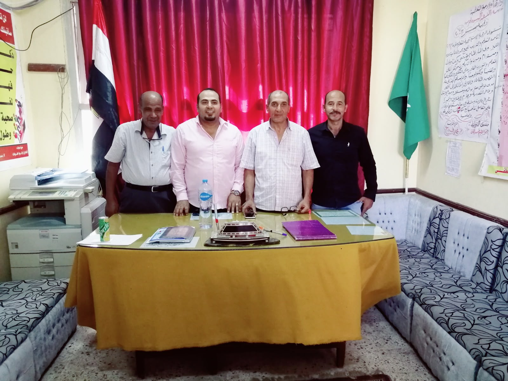
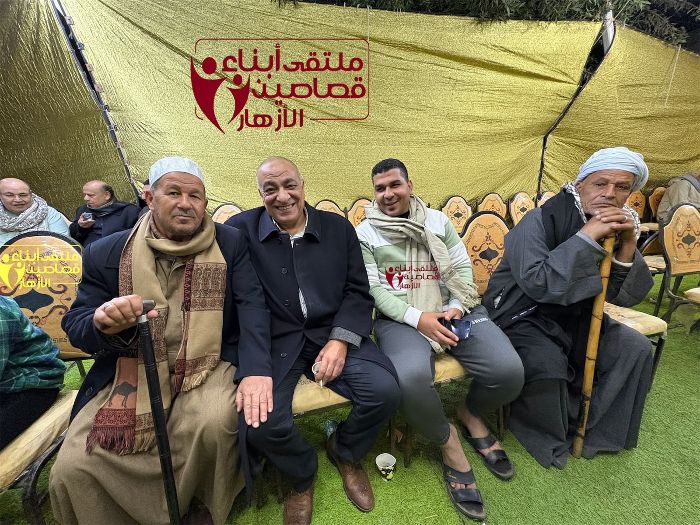
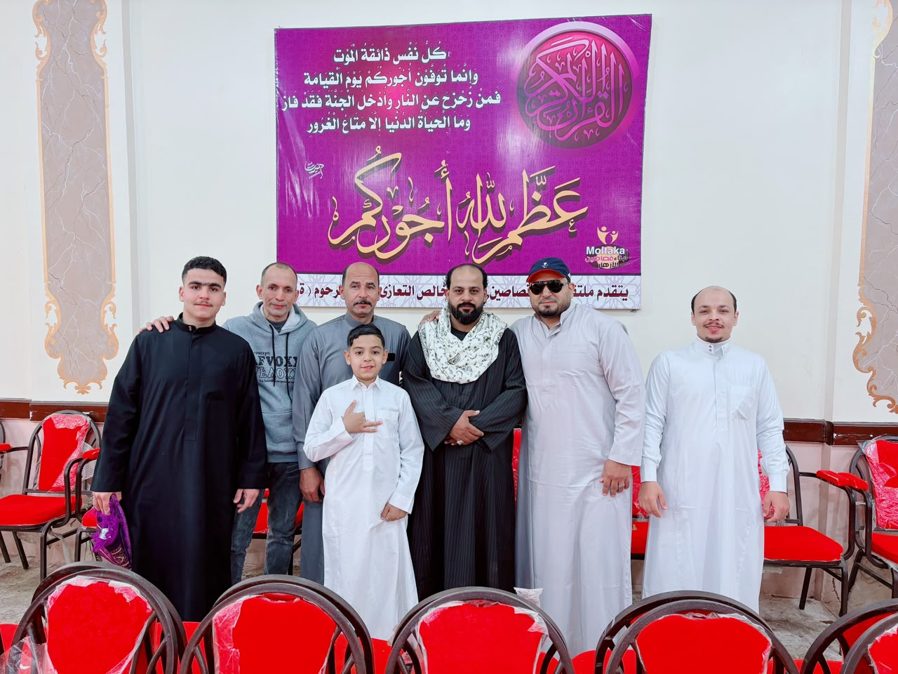

ملتقى أبناء قصاصين الأزهار
الأرشيف الرقمي الموثق لمجتمع القرية مساحة تجمع أهلنا بالداخل والخارج، ويواكب أحداث القرية أولًا بأول، ويدعم المواهب الواعدة في الشعر والفنون، ويعزز روح التكافل والترابط الاجتماعي.. المستمر منذ عام 2012.
فكرة شبابية وُلدت لتوثيق الذاكرة وتوحيد الجهود
تأسس ملتقى أبناء قصاصين الأزهار في 25 مارس 2012 بمبادرة شبابية خالصة أطلق فكرتها أحمد شعبان فرج الله، ليكون بيتاً عائلياً جامعاً لأبناء قرية قصاصين الأزهار التابعة لمركز أولاد صقر بمحافظة الشرقية.
انطلقت الفكرة لربط أهالي القرية المقيمين بالمغتربين في شتى بقاع العالم، ثم تطورت سريعاً إلى ملتقى ميداني وثقافي حقيقي؛ يطلق المسابقات الأدبية والفنية، وينسق قوافل التكافل والدعم الإنساني للأسر الأولى بالرعاية، ويحفظ ذاكرة القرية وأعلامها للأجيال القادمة بعيداً عن أي غايات شخصية أو ربحية.


الرمز الرسمي المعتمد
تأسس 25 مارس 2012يحمل شعار المبادرة يدين متعانقتين تجسدان التعاضد والتواصل بين كبار القرية والجيل الصاعد، في إطار دائري يعبر عن الشفافية ووحدة الصف.
- المؤسس وفكرة النشأة: أطلقها أحمد شعبان فرج الله وتكاتف معه شباب وأهالي القرية بالداخل والمغترب.
- التكافل الإنساني الميداني: مد يد العون للأسر الأولى بالرعاية وتسيير قوافل الخير والمساندة في الأزمات.
- رعاية الإبداع والمواهب: إطلاق المسابقات السنوية في الشعر والرسم والخط بحضور لجان تحكيم متخصصة.
- أصالة الأرشيف والتوثيق: حفظ سجل القرية الإنساني والتاريخي ونقل قضايا القرية ومطالبها التنموية.
أنشطة ومبادرات من نبض المجتمع
توثيق حقيقي للمبادرات الأربع الكبرى التي نفذها الملتقى لرعاية مواهب القرية ومساندة أهلها على أرض الواقع.
سجل المبادرات الميدانية المصورة — بالجهود الذاتية
ألبومات تفاعلية توثق أهم المشروعات التطوعية والأهلية التي نفذها ورعاها ملتقى وأهالي قصاصين الأزهار على أرض الواقع.
قصص من المجتمع — Stories From the Community
أحداث ومسابقات ومبادرات موثقة من مسيرة ملتقى وأهالي قصاصين الأزهار، مستخرجة من المصادر القومية والتسجيلات الميدانية.
صدى المبادرة في الصحافة القومية
تقارير وتحقيقات صحفية موثقة سلطت الضوء على تجربة الملتقى التكافلية والثقافية بمركز أولاد صقر.
الأرشيف المرئي ومعرض الصور
سجل بصري موحد يوثق لقاءات الأهالي، صالونات الأدب، معارض الفنون، وقوافل التكافل الاجتماعي عبر السنين.

مسيرة ملتقى أبناء قصاصين الأزهار
إطلالة توثيقية ترصد بدايات المبادرة منذ عام 2012، وكيف تكاتف الأهالي والمغتربون لخدمة قريتهم ورعاية المبدعين ودعم المحتاجين.